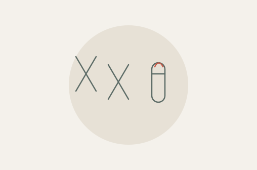

Исследования для разных диагностических задач
Пренатальный скрининг и микрофлора, аллергодиагностика и желудочно‑кишечный тракт. Познакомьтесь с особенностями тестов и материалами для врачей.
Пренатальный скрининг и микрофлора, аллергодиагностика и желудочно‑кишечный тракт. Познакомьтесь с особенностями тестов и материалами для врачей.

По крови беременной оценивает риск хромосомных нарушений у плода. Результат не устанавливает диагноз.
№ 6НИПТ. Анеуплоидии всех хромосом и 60 микроделеционных и микродупликационных синдромов.